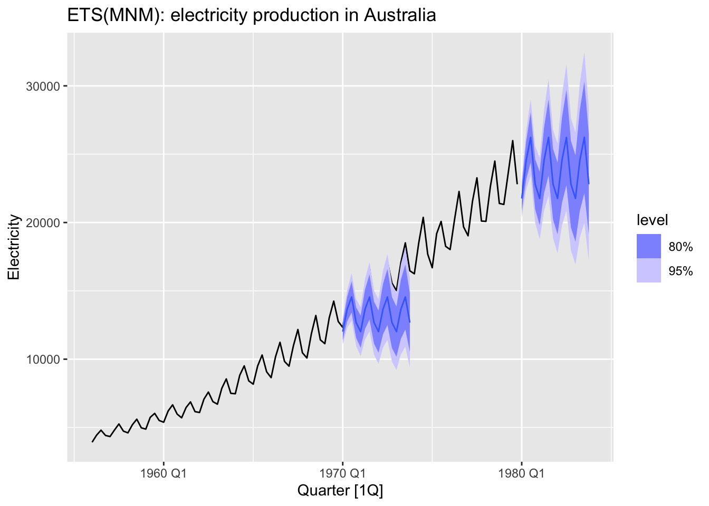
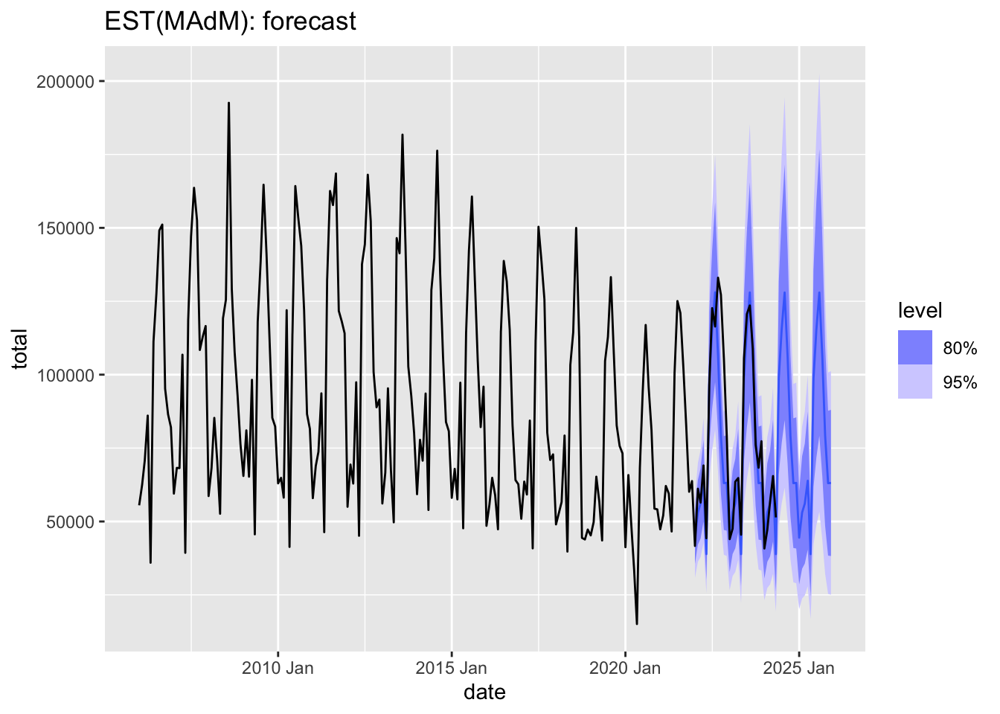
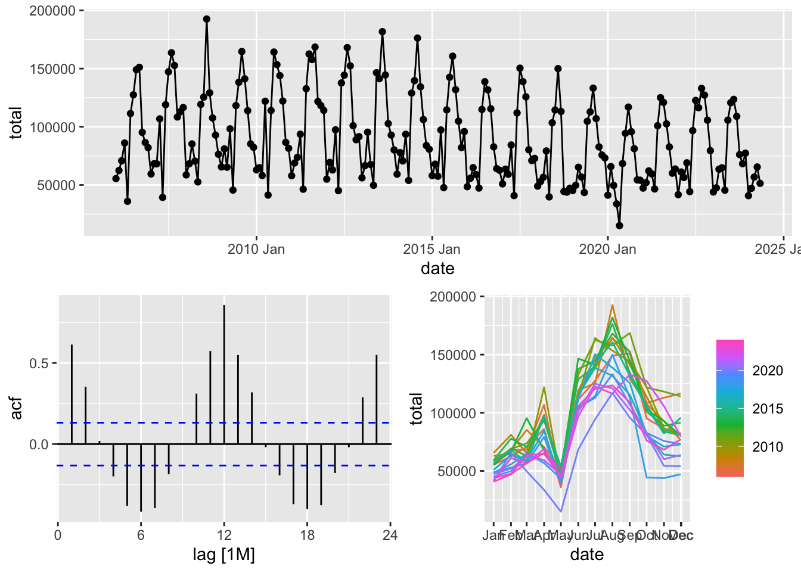
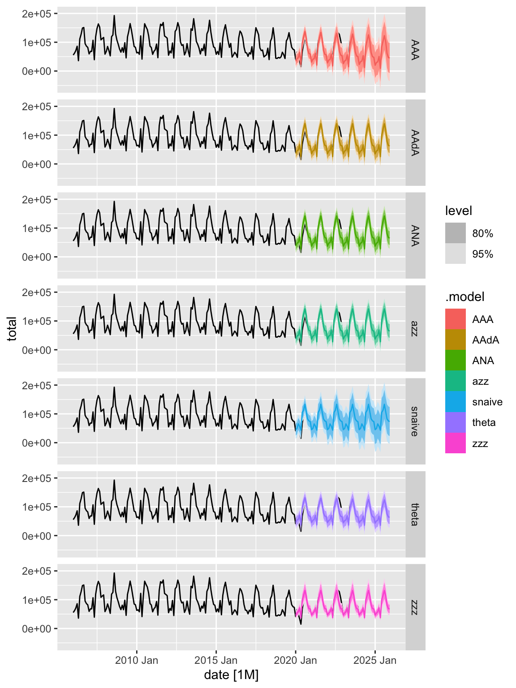

Chapter 3 ETS model variations
## Rows: 24,852
## Columns: 4
## $ code <int64> 1000000000, 1000000000, 1000000000, 1000000000, 1000000000, 1000000000, 1000000000, 1000000000, 1000000000, 1000000000, 1000000000, 1000000000, 1…
## $ name <chr> "Алтайский край", "Алтайский край", "Алтайский край", "Алтайский край", "Алтайский край", "Алтайский край", "Алтайский край", "Алтайский край", "Ал…
## $ total <int> 953, 1007, 1311, 1554, 562, 1900, 2338, 3034, 2460, 1762, 1411, 1554, 1069, 1221, 1330, 1774, 609, 2107, 2708, 3272, 2483, 1825, 1721, 1940, 1006, …
## $ date <IDate> 2006-01-01, 2006-02-01, 2006-03-01, 2006-04-01, 2006-05-01, 2006-06-01, 2006-07-01, 2006-08-01, 2006-09-01, 2006-10-01, 2006-11-01, 2006-12-01, 2…ts_marriages <- m |>
mutate(date = yearmonth(date)) |>
as_tsibble(index = date, key = c('code', 'name'))
glimpse(ts_marriages)## Rows: 24,852
## Columns: 4
## Key: code, name [109]
## $ code <int64> 30, 30, 30, 30, 30, 30, 30, 30, 30, 30, 30, 30, 30, 30, 30, 30, 30, 30, 30, 30, 30, 30, 30, 30, 30, 30, 30, 30, 30, 30, 30, 30, 30, 30, 30, 30, 3…
## $ name <chr> "Центральный федеральный округ", "Центральный федеральный округ", "Центральный федеральный округ", "Центральный федеральный округ", "Центральный фе…
## $ total <int> 14845, 16414, 15753, 21803, 9384, 29571, 35691, 39263, 40480, 24137, 21207, 19009, 15433, 17430, 13878, 29703, 10529, 31572, 41328, 42609, 41779, 2…
## $ date <mth> 2006 Jan, 2006 Feb, 2006 Mar, 2006 Apr, 2006 May, 2006 Jun, 2006 Jul, 2006 Aug, 2006 Sep, 2006 Oct, 2006 Nov, 2006 Dec, 2007 Jan, 2007 Feb, 2007 Ma…3.1 ETS(AAdN): damped trend
In an ETS model with a damped trend, a special coefficient is added to allow the trend’s growth or decline to slow down over time. This is useful when you expect that the trend will not continue to grow or decrease at the same rate indefinitely but instead will gradually slow down.
A damping parameter \(\phi\) is introduced, which lies between 0 and 1. This parameter controls how the trend slows down. - If \(\phi = 1\), the trend remains additive (linear) and is not damped. - If \(\phi < 1\), the trend gradually reduces, slowing down over time.
In an ETS(AAdN) model (Additive Error, Additive damped Trend, No Seasonality), the model is described as follows:
\[ \begin{cases} y_t = \ell_{t-1} + \phi b _{t-1} + \beta u_t \\ b_t = \phi b _{t-1} + \beta u_t, b_0 - \text {start value} \\ l_t = \ell_{t-1} + \phi b _{t-1} + \alpha u_t, \ell_0 - \text {start value} \\ u_t \sim \mathcal{N}(0,\,\sigma^{2}) \text { and independent} \end{cases} \]
Parameters: \(\alpha, \sigma^2, \ell_0, b_0, \beta, \phi\)
3.2 ETS(MNM): multiplicative components
ETS - Error, Trend, Seasonality.
MNM - Multiplicative error, No trend, Mo seasonality.
\[ \begin{cases} y_t = l_{t-1} \times s_{t-12} \times (1 + u_t) \\ l_t = l_{t-1} \times (1 + \alpha u_t), l_0 - \text {start value} \\ s_t = s_{t-12} \times (1 + \gamma u_t), s_0, ..., s_{-11} - \text {start values} \\ u_t \sim \mathcal{N}(0,\,\sigma^{2}) \text { and independent} \end{cases} \]
- \(y_t\) - observed value at time \(t\)
- \(\ell_t\) - trend, or level at time \(T\)
- \(s_t\) - seasonal component
- \(u_t\) - random error
Parameters
- Non-seasonal parameters: \(\alpha, \sigma^2, l_0\)
- Seasonal parameters: \(\gamma, s_0, s_{-1},..., s_{-11}\)
Limitation: \(s_0 \times s_{-1} \times...\times s_{-11} = 1\)
- \(y_t, \ell_t\) - original units
- \(s_t, u_t\) - fraction
- \(s_t\) is measured relative to one, for example, \(s_t = 0.9\) means it is 10% below the trend.
- \(u_t\) is measured relative to zero, for example, \(u_t = -0.1\) means a 10% decrease.
Forecast
Example
fc1 <- aus_production |>
filter(year(Quarter) < 1970) |>
model(ETS(Electricity ~ error('M') + trend('N') + season('M'))) |>
forecast(h = 16)
fc2 <- aus_production |>
filter(year(Quarter) < 1980) |>
model(ETS(Electricity ~ error('M') + trend('N') + season('M'))) |>
forecast(h = 16)
aus_production |>
filter(year(Quarter) < 1980) |>
autoplot(Electricity) +
autolayer(fc1) +
autolayer(fc2) +
labs(title = 'ETS(MNM): electricity production in Australia')## Scale for fill_ramp is already present.
## Adding another scale for fill_ramp, which will replace the existing scale.
3.3 ETS(MAdM): combinations
MAdM: Multiplicative error, Additive dumped trend, Multiplicative seasonality
\[ \begin{cases} y_t = (l_{t-1} + \phi b_{t-1}) \times s_{t-12} \times (1 + u_t) \\ l_t = (l_{t-1} + \phi b_{t-1}) \times (1 + \alpha u_t), l_0 - \text {start value} \\ b_t = \phi b_{t-1} + \beta(l_{t-1} + \phi b_{t-1})u_t, b_0 - \text {start value}\\ s_t = s_{t-12} \times (1 + \gamma u_t), s_0, ..., s_{-11} - \text {start values} \\ u_t \sim \mathcal{N}(0,\,\sigma^{2}) \text { and independent} \end{cases} \]
Parameters
- Non-seasonal parameters: \(\alpha, \beta, \sigma, \phi, l_0, b_0\)
- Seasonal parameters: \(\gamma, s_0, s_{-1}, ... , s_{-11}\)
Example
rf_m |>
filter(year(date) > 2012, year(date) < 2022) |>
model(ETS(total ~ error('M') + trend('Ad') + season('M'))) |>
forecast(h = 48) |>
autoplot(rf_m) +
labs(title = 'EST(MAdM): forecast')
Combinations:
- Errors: A, M
- Trend: N, A, Ad, M, Md
- Seasonality: N, A, M
Historic naming:
- ETS(ANN) - Simple Exponential Smoothing
- ETS(AAA) - Additive Holt-Winters Method
- ETS(AAM) - Multiplicative Holt-Winters Method
- ETS(AAdM) - Damped Additive Trend with Multiplicative Seasonality (Damped Holt-Winters)
3.4 Examples

Split into training and test set.
models <- rf_train |>
model(
snaive = SNAIVE(total),
ANA = ETS(total ~ error('A') + trend('N') + season('A')),
AAA = ETS(total ~ error('A') + trend('A') + season('A')),
AAdA = ETS(total ~ error('A') + trend('Ad') + season('A')),
zzz = ETS(total), # select the best model by AIC
azz = ETS(total ~ error('A')),
theta = THETA(total) # theta method
)## Series: total
## Model: ETS(M,N,M)
## Smoothing parameters:
## alpha = 0.09614705
## gamma = 0.0001025139
##
## Initial states:
## l[0] s[0] s[-1] s[-2] s[-3] s[-4] s[-5] s[-6] s[-7] s[-8] s[-9] s[-10] s[-11]
## 98845.29 0.8608546 0.876489 1.033511 1.431267 1.673549 1.454279 1.274721 0.4759065 0.9107223 0.736584 0.6824381 0.5896779
##
## sigma^2: 0.017
##
## AIC AICc BIC
## 4023.088 4026.246 4069.947## Series: total
## Model: THETA
##
## Alpha: 0.1385
## Drift: -71.6835
## sigma^2: 141532473.0062## Warning: The future dataset is incomplete, incomplete out-of-sample data will be treated as missing.
## 19 observations are missing between 2024 Jun and 2025 Dec## # A tibble: 7 × 12
## .model code name .type ME RMSE MAE MPE MAPE MASE RMSSE ACF1
## <chr> <int64> <chr> <chr> <dbl> <dbl> <dbl> <dbl> <dbl> <dbl> <dbl> <dbl>
## 1 AAA 643 Российская Федерация Test 9524. 20089. 16578. 14.3 26.1 1.37 1.25 0.534
## 2 AAdA 643 Российская Федерация Test 2156. 16373. 12366. 3.07 19.2 1.02 1.02 0.458
## 3 ANA 643 Российская Федерация Test -57.3 16139. 11922. -0.401 18.4 0.987 1.01 0.452
## 4 azz 643 Российская Федерация Test -57.3 16139. 11922. -0.401 18.4 0.987 1.01 0.452
## 5 snaive 643 Российская Федерация Test -1987. 14026. 10311. -7.60 17.0 0.853 0.874 0.470
## 6 theta 643 Российская Федерация Test 115. 14283. 10025. -4.25 16.5 0.830 0.890 0.545
## 7 zzz 643 Российская Федерация Test -1830. 14036. 10206. -6.92 16.9 0.845 0.874 0.500 Composite model.
models <- rf_train |>
model(
snaive = SNAIVE(total),
theta = THETA(total),
composit = decomposition_model(
STL(total ~ season(window = Inf)),
ETS(season_adjust ~ error('A') + trend('Ad') + season('N')),
SNAIVE(season_year) ))## # A tibble: 3 × 12
## .model code name .type ME RMSE MAE MPE MAPE MASE RMSSE ACF1
## <chr> <int64> <chr> <chr> <dbl> <dbl> <dbl> <dbl> <dbl> <dbl> <dbl> <dbl>
## 1 composit 643 Российская Федерация Test 3863. 17186. 13390. 4.97 20.4 1.11 1.07 0.490
## 2 snaive 643 Российская Федерация Test -2213. 14571. 10717. -8.33 17.6 0.887 0.908 0.479
## 3 theta 643 Российская Федерация Test -42.7 14814. 10474. -4.98 17.0 0.867 0.923 0.567Model evaluation for multiple time series.
models <- train |>
model(
snaive = SNAIVE(total),
zzz = ETS(log(total)), # select the best model by AIC
theta = THETA(total)
)## Warning: 22 errors (2 unique) encountered for zzz
## [21] ETS does not support missing values.
## [1] NA/NaN/Inf in 'y'## Warning: 21 errors (1 unique) encountered for theta
## [21] missing values in object## Warning: The future dataset is incomplete, incomplete out-of-sample data will be treated as missing.
## 48 observations are missing between 2020 Jan and 2023 Dec## # A tibble: 3 × 2
## .model avg_MAE
## <chr> <dbl>
## 1 snaive 74637.
## 2 theta 74759.
## 3 zzz 74672.